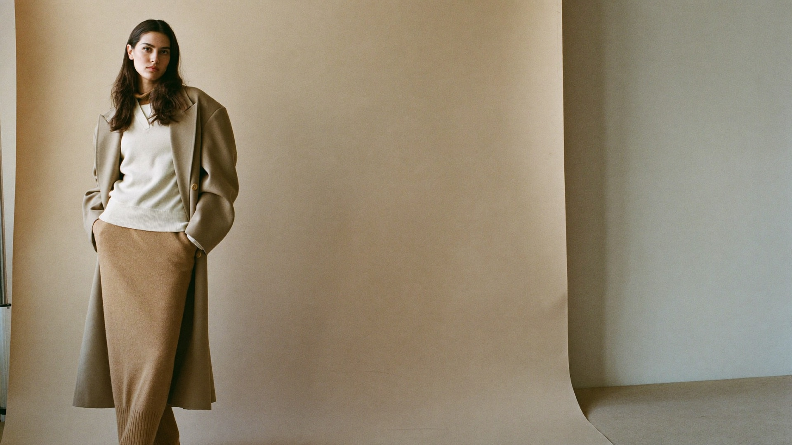
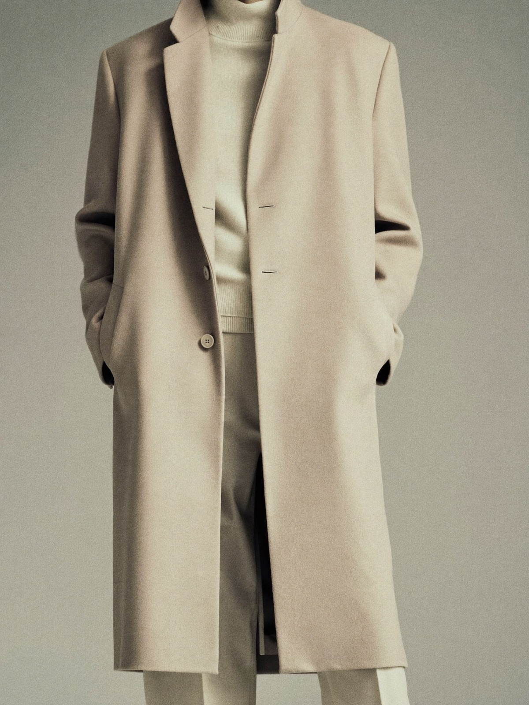
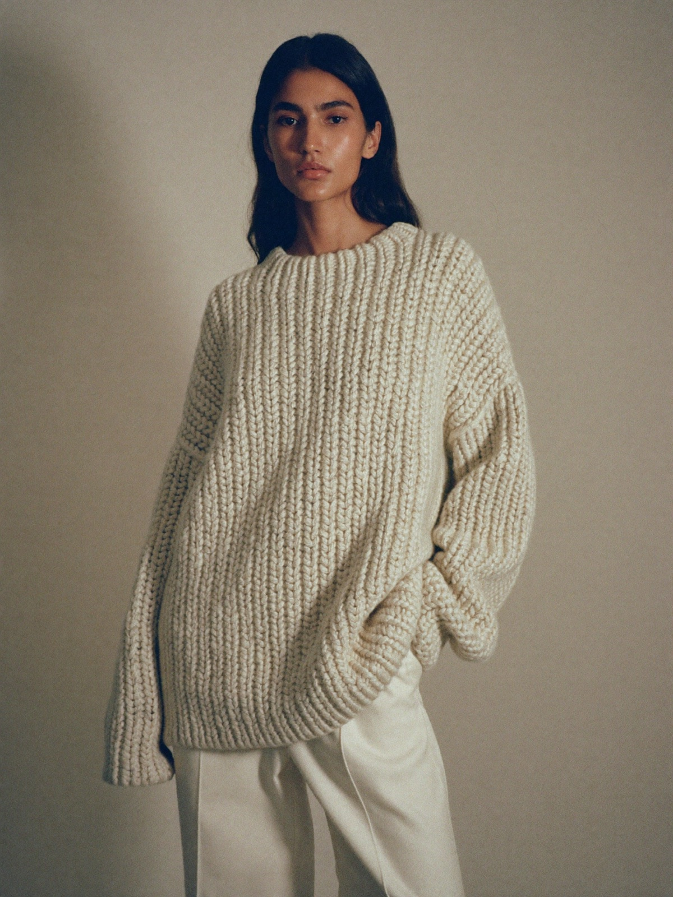
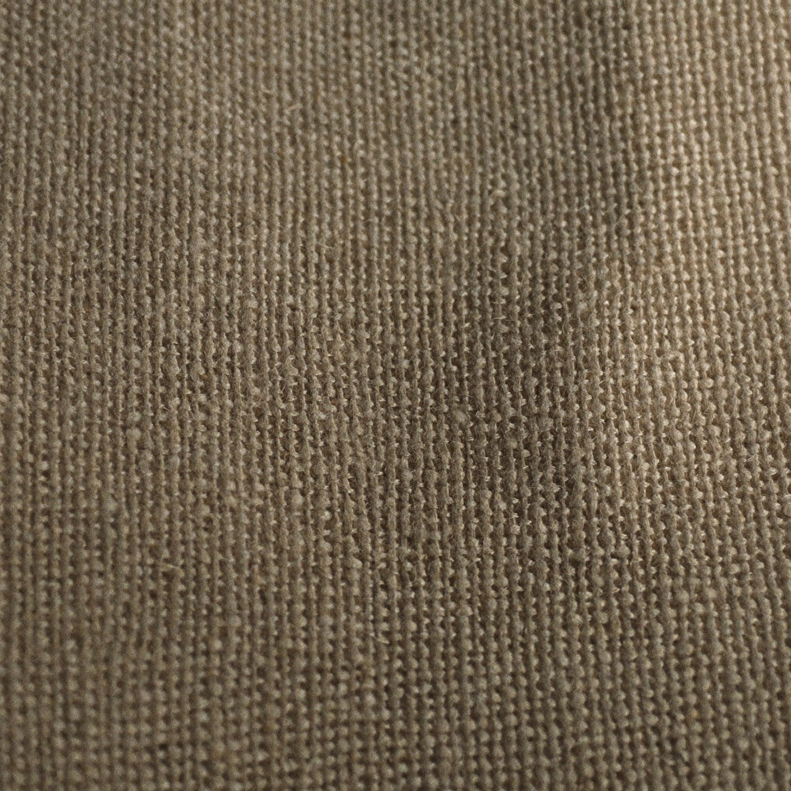

Quiet-luxury essentials
A wardrobe laid down in layers — honest materials, restrained design, made to be worn for years, not seasons.
Explore the collectionThe Strata Principle
We name ourselves after the way the earth records its history — patiently, one layer at a time. Each STRATA piece is made to settle into your wardrobe and stay there.
Undyed wool, long-staple cotton and European linen, chosen for how they age — not how they photograph on day one.
No loud logos, no seasonal noise. A tight palette of tones that layer with everything you already own.
Reinforced seams, natural finishes and a repair-first promise. Buy once, keep for a decade.
The Sediment Collection
Three foundation pieces, photographed in a single tonal range so they layer effortlessly — at home, at work, or anywhere in between.


Piece N°01
An unstructured overcoat in undyed Italian wool, cut long and easy to fall over everything from knitwear to tailoring.
$540Half-canvassed for drape without stiffness, with horn buttons and a single welt pocket. Made to soften, not wear out.
Request a fittingPiece N°02
A heavyweight ribbed sweater in undyed lambswool — the foundation layer everything else is built on.
$280Knitted in a small family mill, fully-fashioned so it holds its shape wash after wash. Naturally water-resistant, never itchy.
Request a fitting
Materials
Everything we make begins as a raw, traceable natural fibre. No synthetics, no shortcuts, no dye we can't justify.
Stay in the seam
New pieces are released in small, considered drops. Leave a note and we'll let you know when the next layer lands — or answer any question about sizing, materials and repairs.